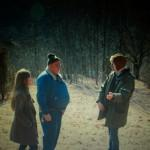

Top 50 Albums Of 2012 (Part Two)
Did you enjoy the first half our Top 50 Albums of 2012 feature? It's here if you didn't get a chance to see it – there really are some great albums in there and we wouldn't want you to miss out. While you're at it, please take a moment or two to check out our Bubbling Under feature, which details 20 great albums that didn't quite make the cut this year.
Now that you're up to date, it's time to dive in and discover what we've voted as our Top 25 Albums of 2012. And when you're done digesting the list, please take a minute to let us know what you think, about the list and the year in general. We think it was a pretty special one, and hope you do too.
. . .
 25. Jack White
25. Jack White
“Blunderbuss”
(Columbia / Third Man)
In the wake of achieving commercial success with 3 very different rock outfits, Jack White took another shot at reinvention with his solo debut, Blunderbuss. Though less accessible (at least immediately) than his earlier work, and despite its absence of arena-rocking riffs and verse-chorus repetition, the album finds White at his most honest and creative. It’s not the tell-all introspective some would hope for (as No Ripcord’s Forrest Cardamenis points out in his initial review), but this complex, piano-driven, blues-infused opus is not to be missed. Perhaps the follow-up will yield more insight into the workings of the iconic mind behind the cigarette, but until then, Blunderbuss offers an opportunity for fans to sit back and enjoy the music. (Ben Jones)
 24. The Men
24. The Men
“Open Your Heart”
(Sacred Bones)
Another rock n’ roll savior? Nah, but a great rock album, nonetheless, Open Your Heart, the third release from New York quartet The Men, is a genre-bending, guitar-centric selection of songs that could only have emerged from extensive crate digging and absolute rock worship. In no way dismissive of rock’s elders, but no less respectful of its progeny, The Men navigate through southern-bred longing (Country Song, Presence), proto punk worthy of Motor City (Turn It Around, Animal) and go left of the dial (Oscillation, Please Don’t Go Away, Open Your Heart), validating an evolving art form whose relevance is not defined simply by era, but by impact. No arrogant swagger, no pretense or elitist demeanor – Open Your Heart epitomizes our enjoyment of rock music. (Sean Caldwell)
 23. Beach House
23. Beach House
“Bloom”
(Sub Pop)
While some critics argued that Bloom didn’t surprise us or blow our skirts up with new hooks, most were comforted by Beach House’s consistency in the dream pop world. Why would you want to wake up from this dream to begin with? As the saying goes, if it’s not broke. Bloom delivered a viscosity of hooks and they were whimsically delicious. The best part was their ability to elevate you, get your heart pumping with rumbling drums and then coat it with a soft melody that keeps rising. Wild is the perfect example of this experience. Buy this album on vinyl at your local record store and thank me later. (Randi Dietiker)
22. Actress
“R.I.P.”
(Honest Jon’s)
Actress's R.I.P. is his first album functioning within an allegorical aesthetic, wherefrom techno's detritus is recoded into futuristic language. One timbre signifying a world is toppled onto another timbre that signifies another world, seemingly without end. How these worlds – of science fiction, of bacteria, of London, of the nightclub – fit together "can never be known beforehand," writes Walter Benjamin; R.I.P. points to an empty space that the listener inhabits, understands, and visualizes multiple, fragmented environments. (Michael Iovino)
21. Mount Eerie
“Clear Moon”
(P.W. Elverum & Sun)
Since Phil Elverum released The Glow, pt. 2 as The Microphones more than ten years ago, we’ve come to learn what to expect out of the guy’s music, with his albums under the Mount Eerie moniker often taking his signature sound in weirder and scarier, yet familiar places. But Clear Moon, his first of two new albums this year, adds a new and highly welcomed element into the mix: cohesion. The “yin” to his second release’s “darker yang,” Clear Moon is the warmest, most inviting album Elverum has released yet, a perfect record for introspective midnight walks. It’s a record that’s as breathtakingly expansive as it is intimate, one that will beckon you to nestle into its tightest crawlspaces. (Peter Quinton)
20. Saint Etienne
“Words And Music By Saint Etienne”
(Commercial Marketing)
They say pop music’s a young person’s game, but try telling that to the trio of Saint Etienne, whose eighth album was arguably the most overtly ‘pop’ of their two decade career. Designed like a radio-friendly greatest hits, Words And Music explored the love affair fans have with the music they adore – the formative stages, the growing relationship and the euphoric sensation of getting lost in their favourite song. It all works because of the quality of the tunes and because Saint Etienne are clearly such huge music fans themselves. A shimmering wonder of a record, Words And Music is part autobiography, part textbook, but all solid gold pop music. (Joe Rivers)
 19. The xx
19. The xx
“Coexist”
(Young Turks)
Relationships are a bitch. Early bliss yields to self-doubt, friction, and jealousy. Here, through the voices of Oliver Sims and Romy Madley Croft, you have two differing points of view, male and female. “What have you done with the one I love?”, a line found on Sunset, could sum up the whole album, which is close in spirit to Bergman’s Scenes From A Marriage. Raw emotions and hard truths are exposed, leaving little room for arrangements. But systolic/diastolic beats add dramatic punctuation. Our Song carves a livable compromise, but for how long? Coexist is not a happy album, but if you’re going through the pains of heartbreak, it’ll pull you through. (Angel Aguilar)
18. Alt-J
“An Awesome Wave”
(Infectious / Canvasback)
Alt-J’s greatest strength is also their weakness. One the one hand, they are just devastatingly catchy. On the other hand, they are devastatingly catchy. Here’s one of those rare albums that grabs you immediately: accessible if not overly familiar, made great by weird vocals and unusual arrangements. But it’s also one of those albums that ingrains itself in your brain so quickly and forcefully that it can grow tiring. An Awesome Wave is one big earworm, but be warned: it’s a tricky bugger to remove – best heard once every couple of weeks at the very most. (Joel Stanier)
17. Django Django
“Django Django”
(Because)
Confidently experimental yet surprisingly accessible, Django Django's self-titled début is an outstanding piece of art from start to finish. From the fun, almost anarchic qualities found in tracks such as Default and Zumm Zumm to the more restrained Hand of Man and Life's A Beach, the thirteen track album is a joyous demonstration of the band's versatility and song-writing talent, with nods to genres from across the musical spectrum. Django Django has found favour with critics and fans alike, earning a Mercury music nomination and helping to land the band the headline slot on next year's NME Awards Tour. (Craig Stephens)
 16. Spiritualized
16. Spiritualized
“Sweet Heart Sweet Light”
(Domino)
Noteworthy alone for including the best song I’ve heard in years, Hey Jane, this album is so much more. It’s as direct a statement of need and spiritual anguish Jason Pierce has ever made, and since it keeps the thrashing and gnawing of teeth to a minimum, it succeeds in being accessible yet totally heartfelt. Its perfect stew of VU drone, gospel intensity and bluesy doable en musica, pushes all my buttons and I’m helpless to resist. My favorite album of the year and probably the best Spiritualized record yet. (Alan Shulman)
15. Grimes
“Visions”
(4AD)
At the heart of the success of Clare Boucher’s breakthrough third album are several fairly contradictory qualities: on the one hand Visions was an album very much informed by pop (particularly of the K- and J- varieties), on the other it’s mostly comprised of fairly ambient electronica, unmistakingly the work of insomnia-driven Macbook fiddling; the lyrics (when decipherable) veering between fragility and defiance (Oblivion), or invitation and rejection (the sweetly cooed "I don’t need hands to touch me" chorus of Be A Body). While Boucher’s baby-doll voice and her material’s deceptive slightness might have worked as an initial stumbling block for many, those that persevered were rewarded with something intriguing, idiosyncratic and nigh-on immaculate. (Mark Davison)
14. Cloud Nothings
“Attack on Memory”
(Carpark / Wichita)
Oh Dylan Baldi. How we underestimated you. Who would have guessed a year ago that this unassuming, bespectacled young man with a penchant for hooky power pop would transform his scrappy little lo-fi project into a powerhouse rock band overnight and release what’s arguably one of the best indie rock albums in recent years. Combining influences from post hardcore, emo, and indie rock acts of the late 80s and 90s, Attack on Memory is the sound of a band channeling the spirits of their influences rather than emulating them, with the eight-minute firestorm Wasted Days and Cobain-esque blood-lettings like Cut You reminding us of the honesty, vitriol, and soar-throated passion that once seemed so commonplace in indie rock. (Peter Quinton)
 13. Japandroids
13. Japandroids
“Celebration Rock”
(Polyvinyl)
Behind Japandroids’ exuberant behavior lies a great deal of uncertainty, a duo that has never had the necessary confidence to believe that they could carry on after a record or two. And many will agree in that Celebration Rock unravels itself very much the same way their debut did – every towering anthem and memorable chorus depicts a young band that’s thrilled with their good fortune, shouting out any shred of trouble that life brings their way with a wide-open lens. Celebration Rock is contagiously captivating in its simplicity; a perfectly paced rollicking half-hour that’s laden with euphoric refrains and buzzing hooks with hardly a wasted minute. So what if it alludes to the vagaries of a rock n’ roll lifestyle. Japandroids haven’t the faintest interest in making you think, and as they intend, want you to indulge in the pleasures of the now. Besides, that’s what hangovers are for. (Juan Edgardo Rodriguez)
12. Sharon Van Etten
“Tramp”
(Jagjaguwar)
Sharon Van Etten’s third full-length album is not just emotionally powerful, but a force to be reckoned with instrumentally as well. Rather than exclusively sticking to the mournful, wounded feel of Epic, Van Etten runs the gamut of the emotional fallout after a relationship ends. The addition of Aaron Dessner’s production has helped her to thrive, pushing her boundaries beyond that of her last two releases. She spits out venomous lines on the angry, propulsive kick of Serpents, laments guiltily about how she’s “bad at loving” on the acoustic Leonard and explores relationships philosophically and tiredly over the light strumming and organ keys of All I Can. This is a record of healing that not only must have helped Van Etten, but anyone else in the same scenario. Universal and personal. That’s Tramp in a nutshell. (Joe Marvilli)
11. Dirty Projectors
“Swing Lo Magellan”
(Domino)
Catchy jerky pop with immaculate sounding guitars plucked completely out of sync with a wavering, simultaneously brilliant and terrible voice and the odd angelic female voices providing a bit of rare harmony. It can only be Dirty Projectors. From the epic Gun Has No Trigger to the melodious The Socialites, Swing Lo Magellan jumps around, following no real pattern, startling, challenging the listener. And in the chaos lies beauty; mellifluous music emerges. It’s a bit like if someone took a jigsaw of the Mona Lisa and stuck all the pieces into the wrong place, yet somehow it made something far more sublime. (James McKenna)
10. Grizzly Bear
“Shields”
(Warp)
After reaching such a unique, textural complexity on Veckatimest, it's really no wonder that Grizzly Bear has meticulously disassembled, analyzed, and subsequently reassembled every aspect of their signature sound. No, there's no sparkling wall of harmonies, orchestras, or bizarre electronic flourishes to be found on Shields. Instead, the album builds itself upon a shifting sense of space, allowing the band to retain the overall girth of their previous production without any of the filler. Rather than leaving the listener in breathless awe, each track on the album seems to breathe with you – making the experience a bit more of a personalized, emotional odyssey. While the band may never quite match their sophomore masterstroke, Yellow House, Shields is undeniably an interesting change of pace that more than well deserves its fair share of recognition. (Andrew Ciraulo)
 9. Godspeed You! Black Emperor
9. Godspeed You! Black Emperor
“'Allelujah! Don’t Bend! Ascend”
(Constellation)
I brushed off the initial news of a new Godspeed record. I believed it was happening, knew the release date, and didn’t care. I love the band, waited in the pouring rain to see them live on their reunion tour, and have adored all their records. But for some reason, I didn’t care. I should have cared. I woke up in October, realized it had been released, and listened to it for hours on end. It’s dark, ambitious, and heavier than they’ve ever been. In an era full of soundbites and clips, it’s glorious to hear an hour long album made up of two twenty minute epics and two drone tracks. In doing what they’ve always done, they’ve made a record that fights the trends more than any of their others. (Andrew Baer)
8. Flying Lotus
“Until The Quiet Comes”
(Warp)
Until The Quiet Comes is an intimate gathering of electronic, jazz, and vocal textures. Some tracks exude a hard, raucous density of synth-clatter, while others swirl and tangle within each other. Since Ellison's work is highly psychological, I imagine this record as an attempt at musically contextualizing his love for jazz coupled with his inability to perform jazz (or in other words, his ability at using electronic equipment as opposed to playing an instrument.) It's beautiful in the way that the sun in LA is beautiful, and it's his most Buddhist record yet, which is apt when thinking about its title. To reach the quiet, one listens. To say the word quiet, one makes a noise. This record is that noise. (Michael Iovino)
7. Ty Segall Band
“Slaughterhouse”
(In The Red)
Ty Segall is a sorcerer at the cauldron; a witchdoctor of sweaty, blood-soaked garage rock. Slaughterhouse, the first record with his touring band, sees equal parts pop melody melted with fragmented, disparate and abstract noise. Insatiable energy jars the senses while retro hooks ease the transition into his underworld. Segall clashes his most distinctive features to create this masterpiece, an astounding achievement for a band whose live presence even transcends the recording. As assured and driven an example of rock music as you're likely to hear this decade, with only, you feel, Segall himself capable of conjuring such a dynamic and invigorating sound again. (Matt Bevington)
6. Frank Ocean
“Channel Orange”
(Mercury)
In a few decades, Channel Orange stands as good a chance as any album of being that album, the first one, the one that changed everything, the one that still sounds fresh despite hundreds of copycats. Conceptually unified, tearjerkingly intimate and remarkably creative, Channel Orange breaks new ground in R&B, neo-soul, electronica, and pop music. From the beautiful Thinkin’ ‘Bout You to the dazzling Pyramids to the cry of Bad Religion, Frank Ocean combines his beautiful voice with a poignant and subtle lyricism that effortlessly captures loneliness and the issues that come with it. That alone would make Channel Orange a great album, but with this level of versatility and, frankly, flat-out brilliance in his arrangements, “great” is just the tip of the iceberg. (Forrest Cardamenis)
5. Fiona Apple
“The Idler Wheel Is Wiser Than The Driver Of The Screw And Whipping Cords Will Serve You More Than Ropes Will Ever Do”
(Epic)
It takes a great deal of self-confidence to let your rawest emotions bleed through. While exposing yourself to the greater extent can bring a substantial level of scrutiny and discomfort, an artist like Fiona Apple is gifted with more fortitude when she’s at her most fragile and vulnerable. Apple may still be an outcast in the top 40 terrain, but she’s the very essence of an iconoclast, an irreverent survivalist who constantly reinvents herself and knows how create a new archetype of female projection every single time. It only makes it more impressive in how such high level of emotional gravitas can be transmitted through the most practical means, Apple’s abstract lock-and-key reflections becoming more evocative in its diverging moments of suspenseful silence and aching vocal stretches. The Idler Wheel… simply can’t just be consumed; it’s an imposing piece of pop artistry propelled by an edgy nonconformist that demands her presence to be recognized. (Juan Edgardo Rodriguez)
 4. Swans
4. Swans
“The Seer”
(Young God)
Swans’ Michael Gira referred to The Seer as the “the culmination of every previous Swans album as well as any other music I’ve made, been involved in or imagined.” With an album as big as his claim, the No Wave eccentric’s very ambitious and highly excessive opus is two-hours of theatrically charged, compositionally intense, raw and repetitious, noise-riddled high art. With The Seer, Swans realize a level of musical sophistication without sacrificing their esoteric nature or the sound Gira cultivated in the early 80s while helping shape NYC’s collective art rock scene. At times easy to swallow, and at others tough to endure, The Seer represents an artistic height, one that can only be followed by knocking down all that it’s built. (Sean Caldwell)
3. Death Grips
“The Money Store”
(Epic)
A more urgent, angry statement couldn’t be found elsewhere in music in 2012. Admittedly, actually pinpointing what Death Grips were so worked up about was often difficult, if not impossible, thanks to Stefan Burnett’s lunatic bellow delivery (ably assisted by Zach Hill and Andy Morin’s punishing production work) but when the end results sounded so vital, such questions didn’t really matter. And for those of a more nervous disposition, the fact that these rants were smartly peppered with bursts of satirical humour also meant that what was essentially a full-on panic attack of a record still managed to be a hell of a lot of fun. (Mark Davison)
2. Tame Impala
“Lonerism”
(Modular)
There are many tricks to songwriting, and if you’ve heard the pop charts lately, you know you can fake your way through. There’s nothing fake about Kevin Parker’s talents. Maybe it’s too soon to compare him to natural-born melody men like McCartney and Wilson, but Lonerism builds a strong case. Take for instance a song like Elephant, which hits you like a ton of bricks before shifting to prog-rock beats; or the delicate, piano-laden Sun’s Coming Up, which veers into a psych-guitar detour. As singer, producer, and multi-instrumentalist, Parker reveals an intrinsic musicality that raises the bar high. This is one for the ages. (Angel Aguilar)
1. Kendrick Lamar
“good kid, m.A.A.d city”
(Polydor)
The sheer scope of good kid, m.A.A.d city indicates that Kendrick Lamar has set out, on his debut album, to create a classic hip-hop record – and has instantly succeeded. His self-critical analysis of everything about growing up on the streets of Compton covers so many themes it’s impossible to summarise; there’s such a vast range of production styles, registers, and social commentaries that the fact that Lamar’s overall narrative holds it together is nothing short of masterful. He deals with alcoholism (Swimming Pools), racial profiling (good kid), gang violence (m.A.A.d city), and ultimately salvation (Sing About Me, I’m Dying of Thirst) – with time to spare to simply show off his flow (Backseat Freestyle). This is music at its most immersive, confessional, and emotionally complex. (Stephen Wragg)
. . .
So that's it. Kendrick Lamar's modern hip-hop classic triumphs, having topped four writers' individual lists and featuring highly on countless others. Please let us know what you think about the winner, the list in general, and the year in music by using the comments section below.
19 December, 2012 - 08:59 — No Ripcord Staff